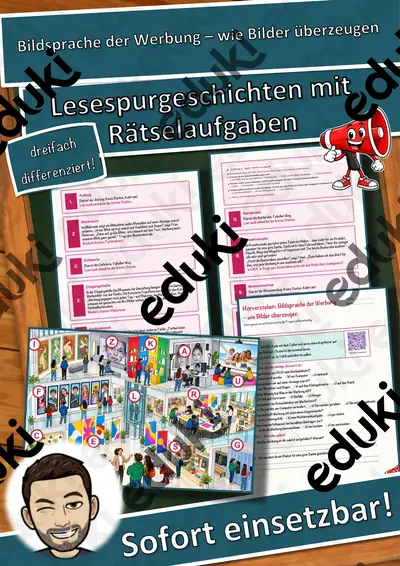
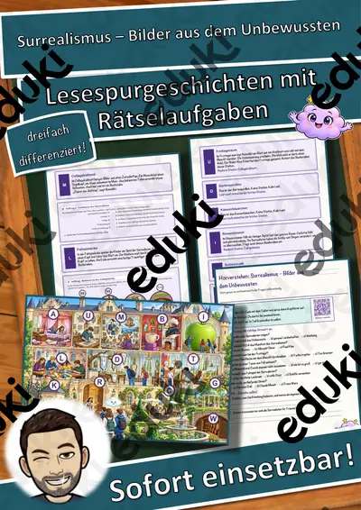
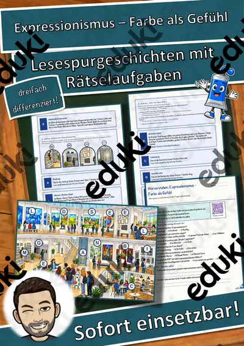
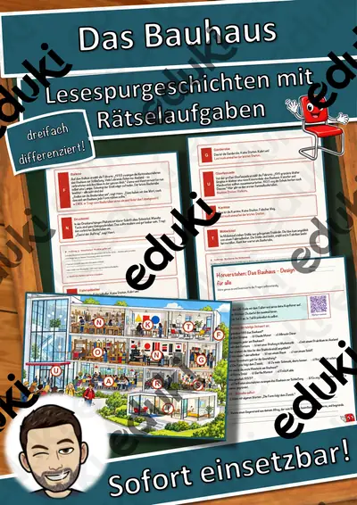
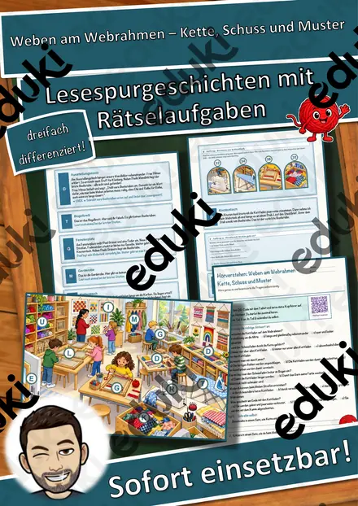
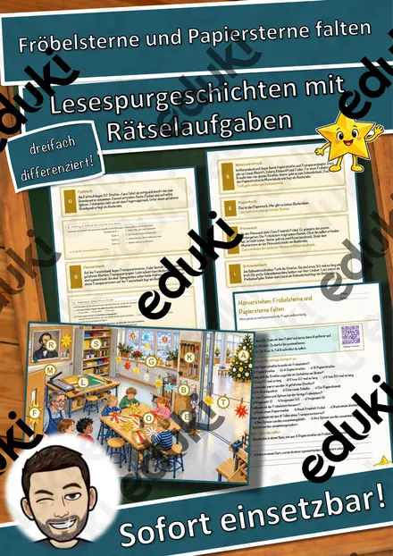

Architektur der Gegenwart – nachhaltig bauen – Lesespurgeschichte mit Rätselaufgaben (Klasse 10)
Architektur der Gegenwart – nachhaltig bauen – Lesespurgeschichte Kunst (Klasse 10)Begib dich mit deiner Klasse auf eine spannende Lesespur durch ein neues Stadtviertel! Nele und Dario besuchen mit ihrem Kunstkurs den Tag der Architektur im Hafenquartier: Am Bürohaus untersuchen sie Glasfassade und Sonnenschutz, am Hochhaus in Holzbauweise erfahren sie, warum Holz als Baustoff der Zukunft gilt, auf dem Gründach entdecken sie, wie Pflanzen das Stadtklima verbessern. In der alten Speicherhalle geht es um Umbau statt Abriss und graue Energie, am geschwungenen Konzerthaus um freie, am Computer entworfene Formen, auf dem Rampenplatz um barrierefreien öffentlichen Raum – und am Modelltisch entwirft jedes Team selbst. Ihr Zollstock Zolli ist immer dabei. Am Ende jedes Abschnitts verrät ein Hinweis den nächsten Ort auf dem Quartiersplan – nur wer genau liest, findet den Weg und sammelt alle geheimen Buchstaben zum Lösungswort.
Die perfekte Lesespur für den KUNSTUNTERRICHT der 10. Klasse – ideal als Einstieg in die Unterrichtseinheit Architektur und gebaute Umwelt: Sie verbindet sinnentnehmendes Lesen mit Fachwissen zu Material, Form, Funktion und Nachhaltigkeit – und bereitet eigene Entwürfe und Architekturanalysen vor. Das Material ist SOFORT EINSETZBAR und in DREI DIFFERENZIERUNGSSTUFEN (leicht ★ / mittel ★★ / schwer ★★★) angelegt.WICHTIG: Das komplette Material ist sowohl in FARBE als auch in SCHWARZ-WEISS enthalten – ideal zum Sparen von Druckkosten.DAS IST ENTHALTEN
- Lesespurgeschichte in 3 Niveaus (leicht, mittel, schwer)
- farbiger Quartiersplan als Suchkarte
- Hörverstehen mit QR-Code zur MP3 (selbstständiges Hören mit Kopfhörern)
- vier Aufträge auf dem Weg: ein Zuordnungsauftrag, ein Quiz, eine Rechenaufgabe (Maßstab/Fläche) und ein Steckbrief
- Rätselseite (Wörter-Suchsel + Fragen)
- Ausmalbild zum Thema (moderne Stadtansicht am Hafen)
- ausführliches Lösungsblatt für die Lehrkraft
- alles zusätzlich als komplette Schwarz-Weiß-VarianteSO GEHT DIE LESESPURDie Jugendlichen lesen ab START, finden im Text den nächsten Ort, suchen ihn auf dem Quartiersplan und lesen bei dieser Station weiter. An jeder richtigen Station gibt es einen Buchstaben. Eingebaute Sackgassen (Tiefgarage, Bauzaun, Imbisswagen, Bushaltestelle) sind keine Stationen und dienen der Selbstkontrolle. Am Ende werden die gesammelten Buchstaben umgestellt und ergeben ein geheimes Lösungswort. (Die Lösungen sind selbstverständlich nur im Lösungsblatt für die Lehrkraft enthalten.)INHALTLICHER SCHWERPUNKTDie Jugendlichen vergleichen Baustoffe und ihre Wirkung (Glas, Holz, Beton, Stahl, Begrünung), lernen Holzbau, Gründächer und das Prinzip „Umbau statt Abriss“ mit dem Begriff der grauen Energie kennen, erleben freie, computergestützt entworfene Formen und ihre Wirkung als Wahrzeichen, beurteilen öffentlichen Raum und Barrierefreiheit und übertragen Maße im Maßstab auf ein eigenes Modell.ABGEDECKTER LEHRPLAN (Klasse 10, Kunst)
- Kunst (LehrplanPLUS Bayern) – Jahrgangsstufe 10 „Architektur und gebaute Umwelt“: zeitgenössische Architektur hinsichtlich Material, Form, Funktion und Nachhaltigkeit untersuchen, Umbau und Bestand bewerten, öffentlichen Raum beurteilen und Entwurfsideen im Modell darstellen.
- Deutsch – Lesen und mit Texten umgehen: Sachinformationen gezielt entnehmen und verknüpfen; Zuhören: einem Sachhörtext konzentriert folgen (Hörverstehen mit MP3).
- Mathematik – Maßstab, Flächenberechnung, Multiplikation.
- Fächerübergreifend / Kompetenzen: Geographie (Stadtentwicklung, Stadtklima), Bildung für nachhaltige Entwicklung, Inklusion/Barrierefreiheit, genaues Lesen und Prüfen, kreatives Gestalten (Ausmalbild).
Geeignet für Freiarbeit, Stationenlernen, Vertretungsstunden, Wochenplan, Projekttage und Distanzunterricht. Klassenstufe 10.
Ähnliche Materialien

Bildsprache der Werbung – wie Bilder überzeugen – Lesespurgeschichte mit Rätselaufgaben (Klasse 10)

Surrealismus – Bilder aus dem Unbewussten – Lesespurgeschichte mit Rätselaufgaben (Klasse 10)

Expressionismus – Farbe als Gefühl – Lesespurgeschichte mit Rätselaufgaben (Klasse 10)

Das Bauhaus – Design für alle – Lesespurgeschichte mit Rätselaufgaben (Klasse 10)

Krippenbau – eine Weihnachtskrippe entwerfen und gestalten – Lesespurgeschichte mit Rätselaufgaben (Klasse 8)

Salzteig-Anhänger – formen, trocknen, bemalen – Lesespurgeschichte mit Rätselaufgaben (Klasse 1)

Weben am Webrahmen – Kette, Schuss und Muster – Lesespurgeschichte mit Rätselaufgaben (Klasse 3)
